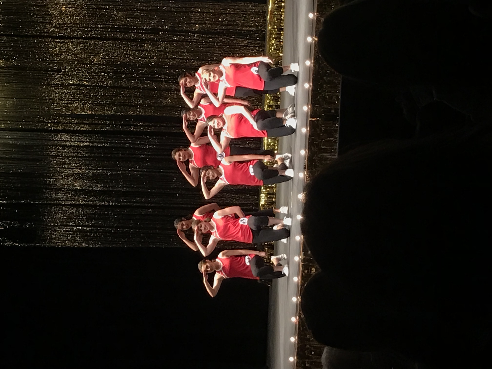

About Me
Portfolio
Vacations
My name is Aaliyah Chavolla. I am a senior at Shafter High School. I do both Track and Field and cross country. I have been running for 8 years.
Even though running is very painful at times, it has taught me how to be stronger both mentally and physically. Running has also showed me how to finish
any race both physical and mental.
After high school I plan to attend a four year university (hopefully Cal Poly:)) and major in Mechanical Engineering.
On my spare time I like to just hang out and have fun with friends and family. I love being at the beach and shopping.
In n out and Chick-fil-a are my favorite places ;).

Distinguished Young Women
In March of 2019 I participated in the DYW program. This is a scholarship program for junior girls.
In the program you have to go through a 10 minute interview, fitness routine, talent, and slef expression. I recieved the award of self-expression
where I gave a speech about how I am passionate about running. Overall i placed 1st runner up in the entire program.
